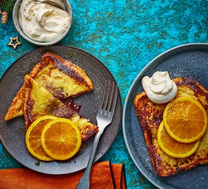

Chocolate-orange French toast

Description
Vegetarian dish. Pair chocolate and zesty marmalade with panettone or challah for an indulgant Boxing Day brunch, or an easy dessert. Top with yogurt, orange slices and syrup to serve
Ingredients
- 4 thick slices of brioche, challah or panettone
- 2 tbsp marmalade
- 40g drak chocolate, broken into pieaces
- 3 eggs
- 300ml whole milk
- 1 tsp vanilla extract
- 1 orange, zested, then peeled and sliced
- ¼ tsp ground cinnamon
- 2 tbsp unsalted butter
- 2 tbsp maple syrup
- icing sugar, for dusting
- yogurt or crème fraîche, to serve
Steps
STEP 1
- Heat the oven to 140C/120C fan/gas.
- Cut a pocket into the side of each thick slice of bread using a small, sharp knife.
- Spoon in a quarter of the marmalade and poke a quarter of the chocolate into each pocket.
STEP 2
- Whisk the eggs, milk, vanilla, orange zest and cinnamon together in a shallow dish.
- Dip each slce of bread into the egg mixture, making sure both sides are fully coated.
STEP 3
- Melt ½ tbsp of the butter in a large frying pan over a medium heat.
- Lay a soaked bread slice in the pan and cook untill golden brown and crispy, about 2-3 minutes per side.
- Repeat with the remaining slices.
- Keep the toasted slices warm in a low oven while cooking the next, adding more butter as needed.
STEP 4
- Put the orange slices in a pan with the maple syrup and warm through over a low-medium heat untill some of their juices are released.
- Dust the French toast with icing sugar and top with the yogurt, orange slices and warm maple-orange syrup.